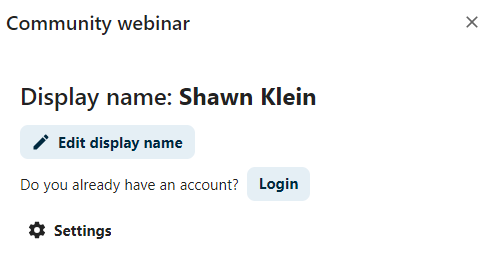
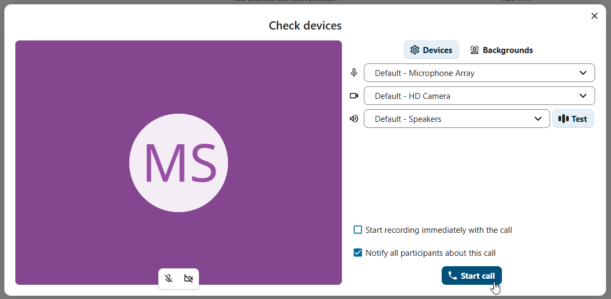

以訪客身份加入通話或聊天
Nextcloud Talk 提供音頻/視頻通話和文本聊天，並集成在 Nextcloud 中。它提供網頁介面以及流動應用程式。
您可以在我們的網站上了解更多有關 Nextcloud Talk 的信息 在這裡。
加入聊天
如果您收到了一個聊天對話的連結，您可以在瀏覽器中打開它以加入聊天。在這裡，您將被提示輸入您的名字才能參加。

您也可以通過點擊位於右上角的「編輯」按鈕來稍後更改您的名字。
{kind=link}

您的攝像頭和米高風設定可以在 設置 選項單中找到。在那裡，您還可以找到可以使用的快捷鍵列表。

加入通話
您可以隨時使用 開始通話 按鈕開始通話。其他參與者將收到通知並可以加入通話。如果其他人已經開始通話，按鈕將更改為綠色的 加入通話 按鈕。

在實際加入通話之前，您將看到裝置檢查，您可以選擇正確的相機和米高風，啟用背景模糊，甚至使用任何設備加入。
{kind=link}

在通話過程中，您可以在頂部欄的 ... 選項單中找到相機和米高風設定。

在通話中，您可以通過右上角的按鈕靜音米高風和禁用視頻，或者使用快捷鍵 M 來靜音音頻，V 來禁用視頻。您還可以使用 空格鍵 切換靜音狀態。當您靜音時，按空格鍵將取消靜音，讓您可以說話，直到您放開空格鍵。如果您未靜音，按空格鍵將靜音，直到您放開。
您可以通過視頻流上方的小箭頭隱藏您的視頻（在共享螢幕時非常有用）。再次使用小箭頭將其帶回。
更多設定
在對話選項單中，您可以選擇全螢幕。您也可以使用鍵盤上的 F 鍵來實現。在對話設定中，您可以找到通知選項和完整的對話描述。

Joining as an email guest
A guest can be invited to a conversation via email. The email contains a link to join the conversation. If the guest clicks the link, they will be redirected to the conversation with an individual access token.

An invitation can be done via inserting the email address in Participants tab search field.

You can bulk invite email participants by uploading a CSV file. The option is available in the conversation settings under Meeting section.